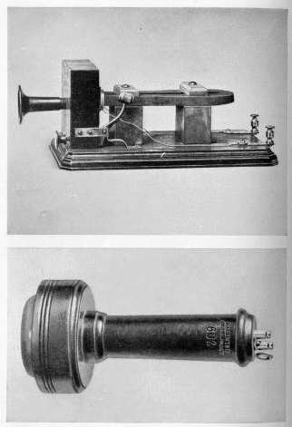

|
 In the same year that Alexander Graham Bell patented the telephone, 1876, MT had one installed in his home. The wire ran from the local newspaper office. I haven't found a picture of MT's machine, but it probably looked a lot like the machine at left: Bell's box telephone of 1877, with the handheld receiver at the bottom. In Connecticut Yankee Hank calls the phone a "modern miracle," although immediately after that tribute he acknowledges that, because of static, it can transform "Valley of Holiness" into "Valley of Hellishness." |